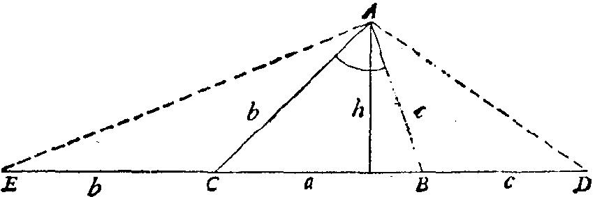

上述考虑可能有助于建议象图11那样放置长度P。我们在三角形的边a的一
侧，加上线段 CE ，其长为b，在三角形的另一侧加上线段 BD ，其长为 C ，使得在
图11中线段 ED 的长度恰好是P，即：
b+a+c=P
如果我们对怍图题有些经验，我们就不会忘记和 ED 一起引入辅助线 AD 与 AE 。它
们都是等腰三角形的底边。事实上，在问题中引入象等腰三角形这样简单而又
为人熟悉的元素是合理的。
图11
迄今，我们在引入辅助线方面一直是十分幸运的。我们观察新图，就可以
发现∠ EAD 和已知角a有一简单关系。事实上，利用等腰三角形△ ABD 与△ ACE ，
可知∠ DAE= α /2+90 °\u30693X道这个特点以后，我们很自然地会去作出△ DAE 。作此
三角形时，我们就要引入一个辅助问题，它远比原来的问题简单。
(4)教师与教科书的作者不应当忘记：聪明的学生和聪明的读者不会满足
于验证推理过程的每一步是正确的，他们还要求知道进行各一步的动机和目的。
引入辅助元素是引入注目的一步。如果一条微妙的辅助线在图中出现得很突然，
看不出任何动机，并且令人惊讶地解决了问题，那末聪明的读者和学生将会失
望，他们感到上当受骗。因为只有在我们的论证及发明会创造的能力中充分发
挥了数学的作用后，数学才是有趣味的。如果最引人注目的步骤的动机和目的
不可理解，那么我们在论证和发明创造方面就学不到什么东西。为使这样的步
骤可以理解，需要加以适当的说明(如前面(3)中所做的那样)，或者精选问题和
建议(象第lO、18、19、20节中所做的那样)，这需要大量的时间和精力，但却
是值得一做的。
3．辅助问题
辅助问题是这样一个问题，我们考虑它并非为了它本身，而是因为我们希
望通过它帮助我们去解决另一个问题，即我们原来的问题。原来的问题是我们
要达到的目的，而辅助问题只是我们试图达到目的的手段。
一只飞虫企图穿过窗户玻璃逃出去，它在同一扇窗户上试了又试，而不去
试试附近打开的窗户，而那扇窗户就是它进来的那扇。人能够或者至少能够行
动得更聪明些。人的高明之处就在于当他碰到一个不能直接克服的障碍时，他
会绕过去；当原来的问题看起来似乎不好解时，就想出一个合适的辅助问题。
构想一个辅助问题是一项重要的思维活动。举出一个有助于另一问题的清晰的
新问题，能够清楚地把达到另一目标的手段设想成一个新目标，这都是运用智
慧的卓越成就。学会(或教会)怎样聪明地处理辅助问题是一项重大任务。